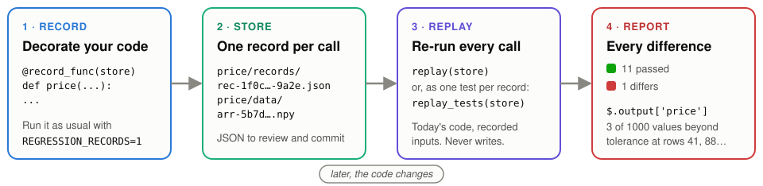
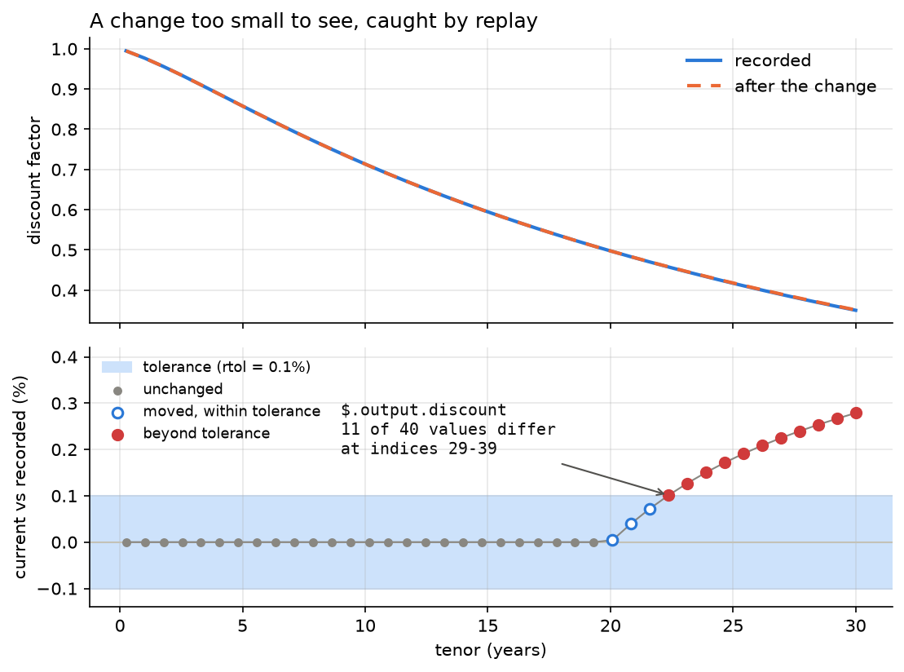

regression-records¶
Record real calls. Replay them as regression tests.
Decorate a function or method and run your code once with recording switched on: each
call is written to a store as a reviewable JSON record, with arrays and dataframes in
content-addressed side files beside it. Later - after a refactor, a dependency upgrade,
on another machine - replay re-runs every recorded call against the current code
and reports each difference down to its exact path, within the tolerances you choose.


In ten lines¶
import numpy as np
from regression_records import record_func, replay
@record_func("tests/regression_data") # 1. decorate, in your package
def discount_curve(tenors: np.ndarray) -> np.ndarray:
return np.exp(-0.03 * tenors)
# 2. record: REGRESSION_RECORDS=1 pytest (or any run that calls it)
# 3. change the code, then replay every recorded call against it:
report = replay("tests/regression_data")
assert report.passed, report.summary()
When something moved, the report says exactly what, where, and by how much - even when the change is far too small to see:


Where to go next¶
Install from git, record a function and a method, replay from pytest, and accept a change you meant to make.
Fifteen executed pages in five sections, from a first record to dataframes, a pricing pipeline and the gotchas - every figure produced by the code.
Replay · Persistence · Comparison · Limitations - what replay does, what the store holds, how values are compared, and what none of it can see.
Every public name, with its full signature and docstring.
Records are JSON you can read and review. Comparison collects every difference rather than stopping at the first. numpy is the only hard dependency; polars and pandas support switches on when the library is installed. Loading a store imports the code it names, so treat a store as you treat code: see SECURITY.md and Persistence.